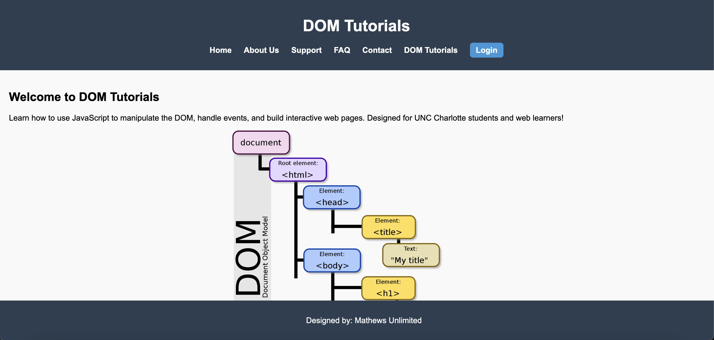

Review 1
Name: Mathews, Sam
- Repository Names: Everything named appropriately.
- CSS File: Looks good, everything in one css file.
- Contrast: Colors are mild and could have more variety. The color contrast from the home page diagram looks nice. Maybe take inspiration from those colors and implement them into the other pages.
- Repetition: Each page follows a logical structured format.
- Alignment: All text and elements are aligned properly. Although the blurb on the tutorials page may look better left centered instead.
- Proximity: Spacing is efficient. But more content could be added to flesh out the pages and make them look complete.
- Structure: Header, Main, Footer are present.
- Header: The header shouldn't include the page name, but rather any branding or nav bar.
- Main: Structured properly. Very intentional about showing different components through proper spacing and naming.
- Slogan: Site needs slogan and branding across pages. Maybe create a logo or tagline.
- Footer: Structured properly. Includes the design firm name.
- Project Requirements: All neccessary pages are present, however I would aim for at least one image per page. Regarding website functionality, the contact us page is responsive to different inputs (and lack thereof). Another suggestion would be the expedite the nav bar process but just sending it in a separate file and connecting it to each individual file through javascript. That way, you don't have those lines of code in every single file.